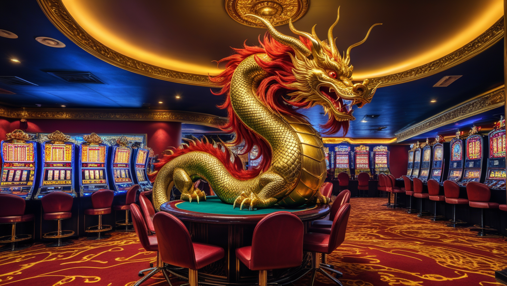

The Legendary Dragon's Tale
The legendary Chinese dragon, known for its wisdom and magnificence, also decided to venture into the world of gambling. It was not just a master of celestial heights but also a ruler of unbeatable luck and incredible intuition.

One day, under the bright stars, the dragon landed on the southern coast of China, where a colossal casino named "Dragon's Treasures" was located. In this casino, a game called "Heavenly Fire" looked like an open book adorned with exquisite dragon illustrations, capturing the imagination of every player.
As the dragon started playing, it felt the magic of gambling filling its heart with bravery and determination. Its wings could enchant, and its eyes glowed like the true harbinger of luck. During the game, it adeptly tracked every spin of the roulette and predicted the outcomes of card games. Its every move resembled a dance, and its alluring glances were perceived as mysterious prophecies.

With each victory, the dragon gained a new surge of energy, and its name became synonymous with luck in the casino. Its long tail gently wrapped around the players, and its majesty filled the room with wisdom and tranquility.
One day, the dragon decided to participate in a massive tournament where players from all over the world competed to determine the wealthiest among them. This tournament was a trial by fire, where players clashed with their own limits, trying to prove their luck to the dragon. In this epic battle, where stakes were high, the dragon displayed incredible agility and sophistication, securing a victory that remained etched in the memory of every participant.
This tale of the Chinese dragon in the world of gambling became a legend, teaching us to believe in our abilities and find luck even in the highest heavens. It tells us that intuition and faith in our own strengths can exceed even the loftiest expectations, and each of us can find our own "Heavenly Fire," leading us to incredible victories in the realm of gambling.